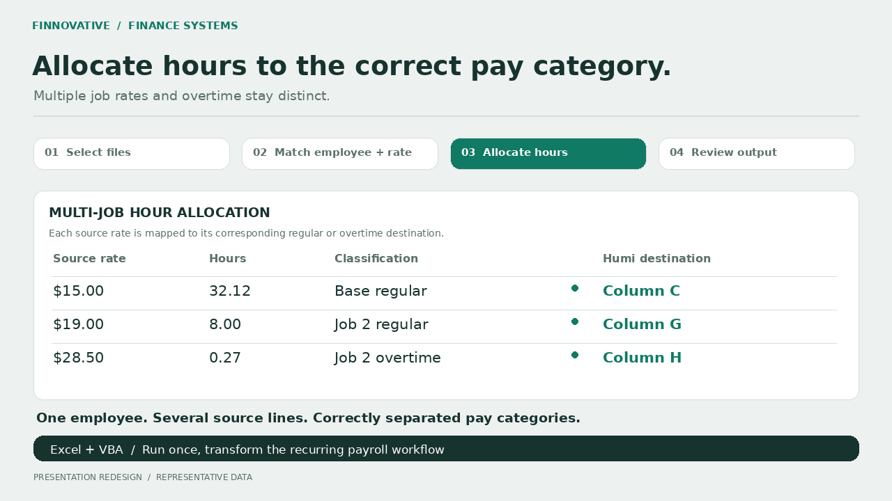
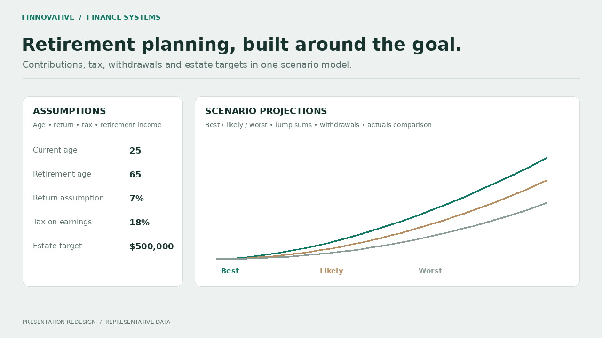
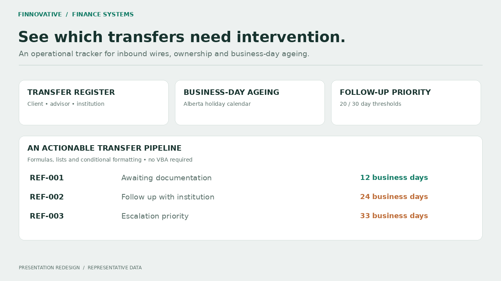
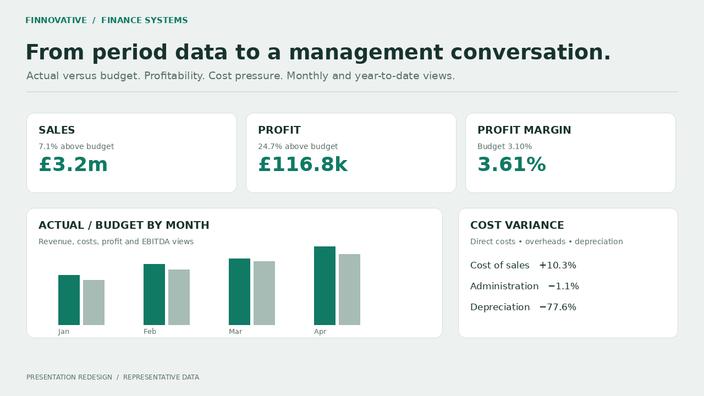
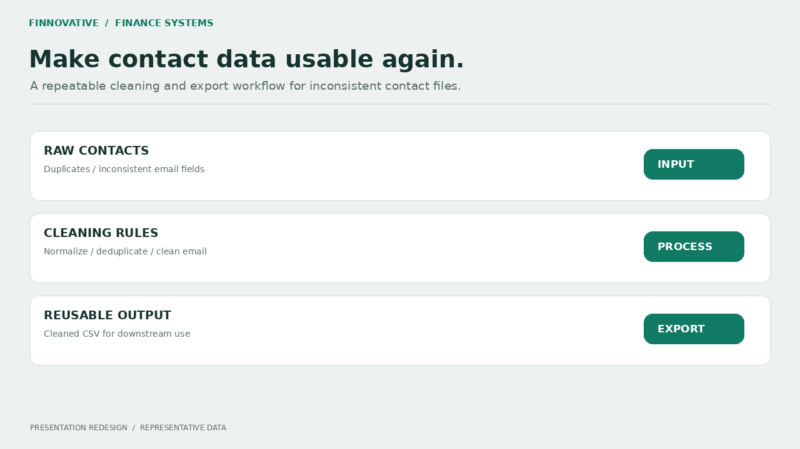
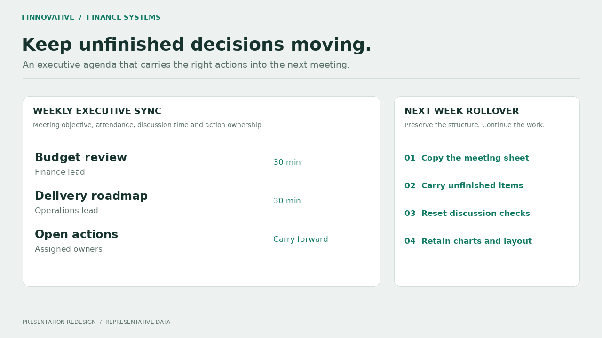

FINNOVATIVE · Built personally
Restaurant365 → Humi payroll processor
Employee identity, ordered pay rates and multi-job hours mapped into the Humi template in one run.
View project & walkthrough ↗FINNOVATIVE AUTOMATIONS / CONNECTED BUSINESS SYSTEMS
We build finance tools, reporting systems and connected IT workflows—so your team spends less time moving information and more time using it.
50+ clients served · Founder-led delivery · Finance & IT
Founded by Qasim Raza Awan in April 2022. Qasim builds solutions personally and manages freelancers across finance and IT engagements, overseeing scope, quality, testing and handover.
Explore completed projects ↗CHOOSE THE WORK YOU WANT HANDLED
Start with the problem your team repeats. We scope the workflow, connect the tools and define when a person takes over.
Answer calls and messages, capture leads and keep bookings moving.
Explore customer operations ↗02 / FINANCE SYSTEMSReconcile source records, automate reporting and build reviewable financial models.
Explore finance systems ↗Voice, messaging and CRM workflows with clear staff handover rules.
Answer routine questions using your approved business information. Capture the details of a request and pass it to a person when needed.
Handle common enquiries, collect customer details and guide people toward a booking or the right member of your team.
Answer incoming calls, handle common questions and book appointments against your connected calendar. Collect the details your team needs before handing over.
Keep enquiries from getting lost between forms, inboxes and spreadsheets. Give each lead a record, an owner and a next action.
Ask the questions your team repeats, collect the answers and help customers take the next step.
Replace scattered files with a small tool built around the task. Keep the fields, views and actions your team actually needs.
Reconciliation, reporting and implementation support grounded in accounting controls.
Match records across ledgers, supplier statements, bank files and operational systems. Give your team a clear exception list and an explainable balance.
Connect finance and operational data so the same records do not need to be entered into several systems. Support implementation with practical mappings and checks.
Turn recurring data pulls and manual checks into repeatable processes. Bring SQL queries, APIs and spreadsheet sources into a consistent reporting flow.
Make the numbers easier to review, from revenue and costs to receivables and operational exceptions. Connect the report to the data behind it.
Keep the flexibility of spreadsheets while removing repeated preparation, posting and consolidation work.
Build models and reporting packs that make assumptions, scenarios and movements visible. Reuse the process when the next period arrives.
COMPLETED CLIENT WORK
A selection of finance and operational projects delivered through Finnovative. The full catalog also identifies work managed through freelancers.

FINNOVATIVE · Built personally
Employee identity, ordered pay rates and multi-job hours mapped into the Humi template in one run.
View project & walkthrough ↗
FINNOVATIVE · Built personally
Work back from retirement income and estate goals to the contributions required.
View project & walkthrough ↗
FINNOVATIVE · Built personally
Prioritize inbound wires using advisor ownership and business-day ageing.
View project & walkthrough ↗
FINNOVATIVE · Built personally
Connect sales, cost movements and margins to monthly and year-to-date budget performance.
View project & walkthrough ↗
FINNOVATIVE · Built personally
Cleaned, exportable contact files produced through a repeatable process.
View project & walkthrough ↗
FINNOVATIVE · Built personally
Carry unfinished actions into the next meeting while resetting discussion controls.
View project & walkthrough ↗TRY THE WORKFLOWS
Customer workflows
Choose an example to see the conversation and the work that could happen behind it: capture the enquiry, update the record and route the next action.
Interactive scripted example. Production builds connect to your approved information and systems.
Can I speak to someone about a damaged delivery?
I can collect the details for the support team. What is your order reference, and what arrived damaged?
Save the order reference and issue, then assign the request to a person for review.
FINANCE TOOL DEMONSTRATIONS
Browser demonstrations for document extraction, matching and variance review, using synthetic sample data. These examples are separate from the completed client work above.
Extract fields from a selectable text PDF, check the totals and correct the register before export.
Open invoice demoCompare ledger and supplier files. Keep duplicates, differences and missing records visible for review.
Open reconciliation demoCompare budget and actuals, apply materiality thresholds and trace results back to source rows.
Open variance demoHow we approach your project
Show us the questions, tasks and follow ups your team repeats. We map the required information, systems and points that need a person.
Agree the scope, configure the workflow and test it with realistic examples. Check the answers, record updates and handovers before it is used with customers.
Receive the build, documentation and a walkthrough of how to update it, review its activity and take over when needed.
The proposed scope is agreed before development begins.
Before you start
The services on this page are custom builds. The conversation preview is scripted, and the linked finance tools are working browser demonstrations. A production agent is scoped and configured for your business.
A build can cover routine questions, enquiry capture, booking requests, updates and routing to your team. The exact channels, information sources and actions are agreed during scoping.
Yes, this can be scoped as an incoming call workflow with a voice and telephony provider, your business information and a connected booking calendar. It can check available slots, collect contact details, create a booking and send a summary. Transfer rules, permissions, provider costs and booking checks are agreed and tested before launch.
Yes. Finance work includes reconciliations, accrual and control account reviews, SQL and Python pipelines, Power BI reporting, Excel and VBA tools, financial models and finance system implementation support. The linked portfolio shows the actual project work.
We first check what the systems support and what access is available. The proposed scope identifies the integrations, account requirements and any limits before development starts.
Possibly. Hosting, messaging, AI model usage or third party platforms may have their own charges. These are identified separately from the build fee before you proceed.
Staff handover and exception routing can be included in the agreed scope. We define when the workflow should collect details, stop an automated action or pass a request to your team.
Price depends on the scope, integrations and support required. Deliverables, handover, documentation, account ownership and ongoing maintenance are agreed in the project proposal.
TELL US ABOUT THE REPEATED WORK
Send the task, the tools you use and the result you need. We’ll use that to discuss scope, integrations and handover.
finnovative.automations@gmail.com